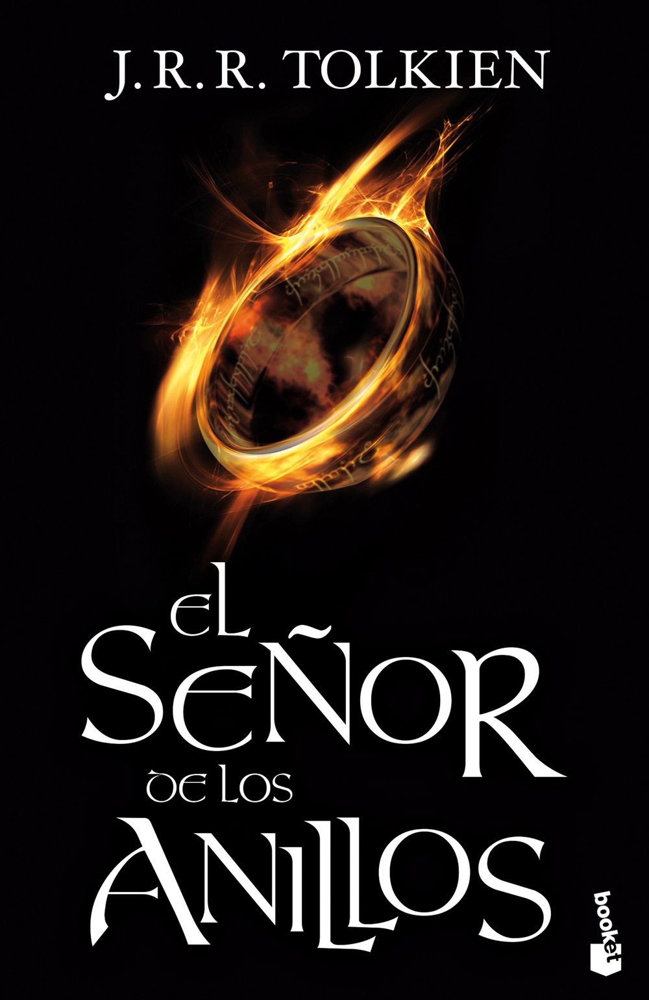

"Tres Anillos para los Reyes Elfos bajo el cielo,
Siete para los Señores Enanos en palacios de piedra,
Nueve para los Hombres Mortales condenados a morir,
Uno para el Señor Oscuro, sobre el trono oscuro
en la Tierra de Mordor donde se extienden las Sombras.
Un Anillo para gobernarlos a todos. Un Anillo para encontrarlos,
un Anillo para atraerlos a todos y atarlos en las tinieblas
en la Tierra de Mordor donde se extienden las Sombras."
Tolkien no tuvo la intención de escribir una secuela de El hobbit, pero acabó siendo persuadido por Stanley Unwin, presidente de la editorial George Allen&Unwin por aquel tiempo, para que escribiera la continuación de El hobbit y, en diciembre de 1937, empezó a desarrollarla.
En un primer momento, escribió varias versiones de una historia en la que Bilbo Bolsón, el protagonista de El hobbit, había gastado todo el tesoro que encuentra en dicha novela e iba en busca de otra aventura para ganar más. Sin embargo, Tolkien recordó el Anillo y sus poderes
y decidió escribir sobre ello, aunque conservando muchas cosas de las versiones descartadas. También decidió sustituir a Bilbo como protagonista principal, primero creando a su hijo, Bingo, pero descartándole también debido a que generaba algunas cuestiones difíciles, como la
creación de una esposa para Bilbo y el motivo de que ésta no estuviera en la historia. Así fue como surgió el personaje de Frodo Bolsón, también llamado Bingo en un principio. Técnicamente, Tolkien hizo que Frodo fuera el primo segundo de Bilbo, pero debido a la diferencia de
edad ambos se consideran a sí mismos tío y sobrino respectivamente. A partir de aquí, la historia tomó rumbo, aunque estuvo sometida a constantes revisiones y modificaciones.
Debido al carácter perfeccionista de Tolkien y a que era interrumpido con frecuencia debido a sus obligaciones académicas la composición de la novela fue lenta y a intervalos de tiempo. Tolkien iba enviando copias de los capítulos acabados a su hijo Christopher, a su amigo
C. S. Lewis y al hijo de Unwin que le servían como críticos. Tras haber reescrito la historia en tres ocasiones desde el principio hasta la llegada a Rivendel, en 1940 abandonó su redacción durante un tiempo, dejando a la Compañía del Anillo, aún sin Legolas y Gimli, ante la tumba
de Balin en Moria. En enero de 1941, reinició la escritura hasta antes de 1943, año que de nuevo estuvo casi en blanco. A principios de diciembre de 1944 le envió una carta a Stanley Unwin en la que le comunicaba la posibilidad de que la novela estuviera acabada antes de que
finalizara el año. Sin embargo, subestimó el alargado final que estaba elaborando, que, junto con sus obligaciones y la escasez de papel debido a la posguerra, le impidió finalizarla. El Señor de los Anillos se terminó de manera efectiva en 1948, pero Tolkien estuvo revisando el
trabajo hasta 1954, el mismo año de la publicación.
Este novela está dividida en tres partes y seis apéndices, que son:
"Que las estrellas brillen para ti hasta el final del camino."
En la adormecida e idílica Comarca, un joven hobbit recibe un encargo: custodiar el Anillo Único y emprender el viaje para su destrucción en el Monte del Destino. Consciente de la importancia de su misión, Frodo abandona la Comarca e inicia el camino hacia Mordor con la
compañía de inesperada de Sam, Pippin y Merry. Pero sólo con la ayuda de Aragorn conseguirán vencer a los Nazgûl y alcanzar el refugio de la Casa de Elrond en Rivendel.
"¿Cómo volverá el mundo a ser lo que era después de tanta maldad que ha sufrido?"
La Compañía se ha disuelto y sus integrantes emprenden caminos separados. Frodo y Sam continúan solos su viaje a lo largo del río Anduin, perseguidos por la sombra misteriosa de un ser extraño que también ambiciona la posesión del Anillo. Mientras, hombres, elfos y enanos
se preparan para la batalla final contra las fuerzas del Señor del Mal.
"No diré: "No lloréis", pues no todas las lágrimas son amargas."
Los ejércitos del Señor Oscuro van extendiendo cada vez más su maléfica sombra por la Tierra Media. Hombres, elfos y enanos unen sus fuerzas para presentar batalla a Sauron y sus huestes. Ajenos a estos preparativos, Frodo y Sam siguen adentrándose en el país de Mordor en su
heroico viaje para destruir el Anillo de Poder en las Grietas del Destino.
| Nombre | Raza | Compañía del Anillo | |
|---|---|---|---|
| Aragonr | Dúnedain | Sí | |
| Bilbo | Hobbit | No | |
| Boromir | Humano | Sí | |
| Elrond | Peredhil | No | |
| Éomer | Humano | No | |
| Éowyn | Humana | No | |
| Faramir | Humano | No | |
| Frodo | Hobbit | Sí | |
| Galadriel | Elfa | No | |
| Gandalf | Maiar | Sí | |
| Gimli | Enano | Sí | |
| Gollum | Hobbit (corrompido) | No | |
| Légolas | Elfo | Sí | |
| Meriadoc Brandigamo | Hobbit | Sí | |
| Peregrin Tuk | Hobbit | Sí | |
| Samsagaz Gamyi | Hobbit | Sí | |
| Saruman | Maiar | No | |
| Théoden | Humano | No | |
| Sauron | Maiar | No | |
Fuente: Wikipedia